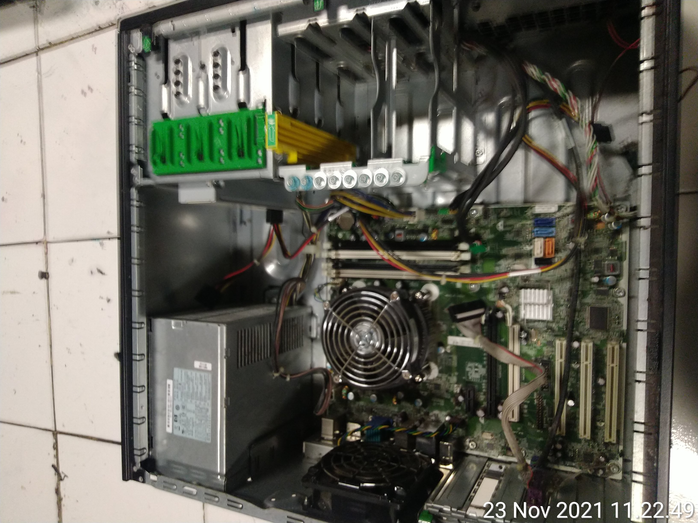

Galeri projek selama PKL/prakerin
Selama PKL dari tanggal 01 November 2021-24 Februari 2022, Saya menempati divisi service komputer.
Instal windows
untuk versi windows yang kebanyakan diinstal adalah windows 7 dan 10

Merakit pc
merakit pc adalah kegiatan menyatukan komponen pc sehingga pc dapat menyala